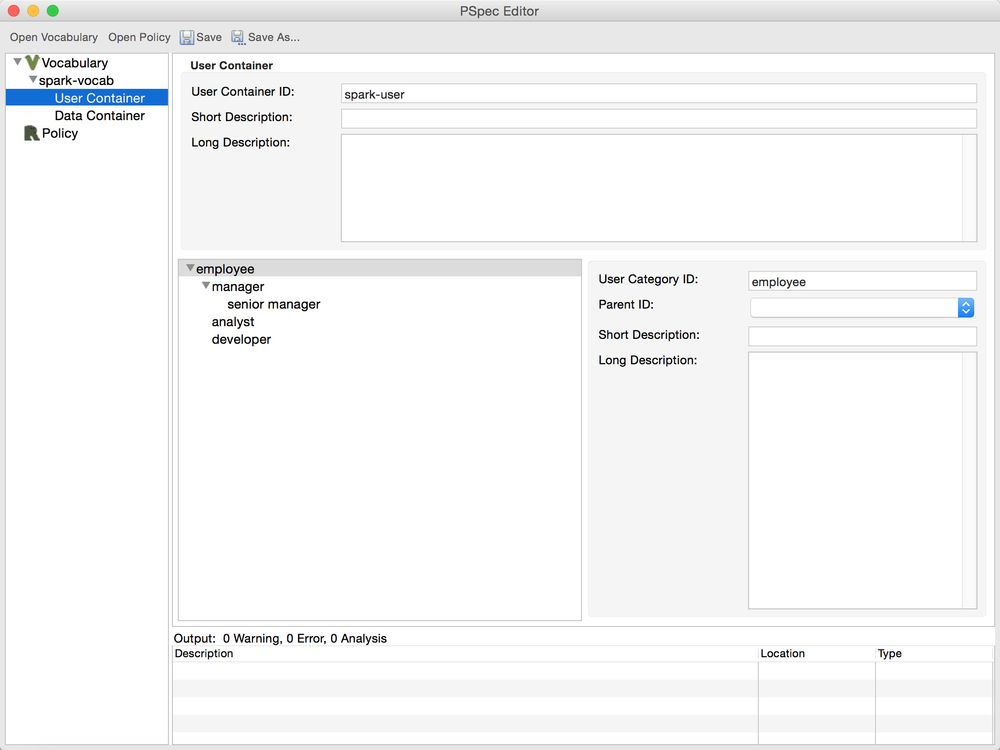
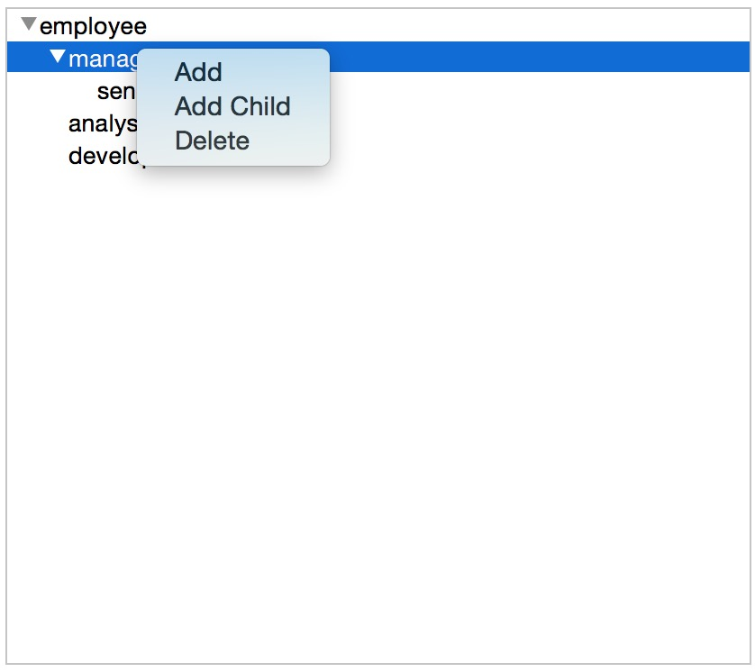
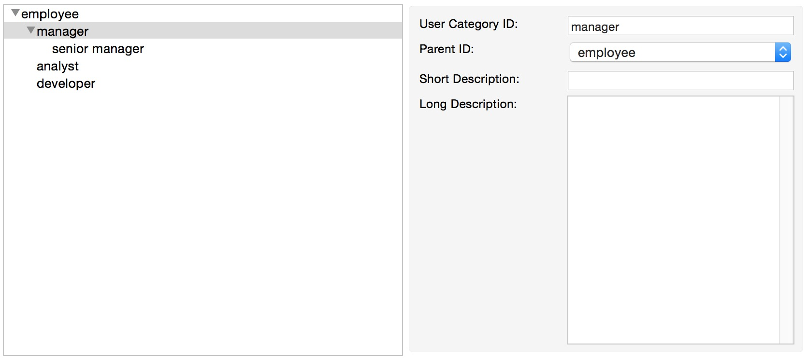
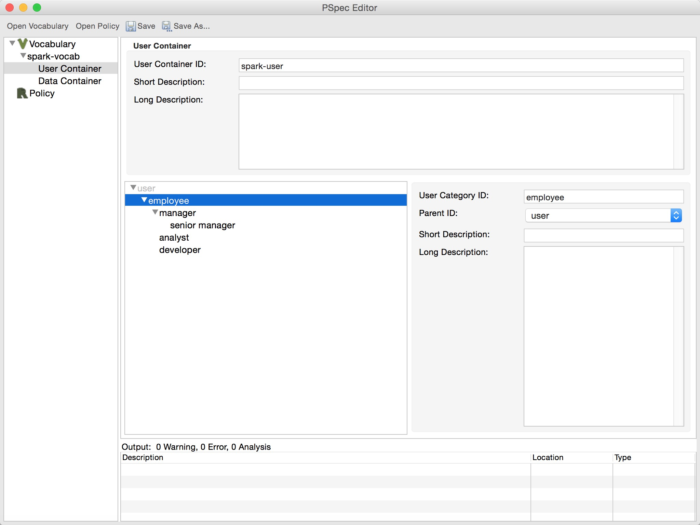

As mentioned, a user container in a vocabulary defines a set of user categories to be regulated. The user categories are further organized into hierarhical structures.
An example user container view is as follows (appears when clicking "User Container" under the id of the vocabulary in the navigational tree).

In the upper part of the user container view, the policy writer can edit the basic information of the user container, including its ID, Short Description and Long Description. In the lower part of the view, there is a tree showing all user categories defined in the container. When some user category in the tree is selected, the information of the user category is shown in the right part correspondingly.
All user categories in a user container is shown in the user category tree. In the following, we will show how to manage user categories, add/edit/delete a user category respectively.
To add a user category, one can right click the user category tree and a popup menu will show up as follows.

Here the policy writer has two options to add a user category:
Note that in both cases, the id of the new user category should be unique, i.e., a user container cannot have two user categories with the same id (including the inherited user categories).
To edit a user category, one can simply click the target user category in the user category tree, and the information of the selected user category is shown in the right panel as follows.

In the right panel, the policy writer can change the ID, parent ID, Short Description and Long Description of the selected user category. But remember, the ID must be unique, and the referenced parent user category cannot be a cycle.
To delete a user category, one can simplify click Delete on the popup menu. But note that there are two options to deal with the children user categories:
For example, suppose manager is deleted. In Cascade mode, senior manager is deleted as well. While in Non-cascade mode, senior manager is not deleted and its parent is set as employee.
For a vocabulary, if the base vocabulary is set, then the user categories defined in the base vocabulary is also shown in the user category tree. An example is shown as follows.

Here user category user is defined in the base vocabulary, and emloyee is set as a child of user. Note that the user categories defined in the base vocabulary are read-only, i.e., they cannot be edited in current vocabulary. To edit them, one should open the base vocabularly separately, edit then save it, and reload the current vocabulary.
Also remember that the user categories should be unique among the vocabulary and all the base vocabularies. For example, one cannot define user category user in current vocabulary again since it has already been defiend in the base vocabulary.